We used 3 prompting techniques to extract information from ChatGPT (version 5.6 Luna), Gemini (version 3.5 Flash-Lite) and Mistral (version medium 3.5). In order to obtain results that were as neutral and unbiased as possible, we logged out of our personal accounts before interacting with the AI tools. This allowed us to generate responses without the LLMs drawing on any previously stored information, chat histories, and personalised settings (including the language in which the systems responds), since we normally formulate prompts in our native language, which is not English but the course and final presentation were to be conducted in English).
Knowing that AI-powered conversational assistants tend to refer directly to the wording and structure of the input when providing results, we opted to query all three assistants using identical prompts. This ensured that the outputs could be compared under consistent conditions.
We then compared the information available on Wikipedia with our prior knowledge of the festival, acquired by following this cultural event on television. This process allowed us to assess the accuracy and reliability of the information before inserting it into the knowledge graph.
Prompt: "What can you tell me about the Sanremo Music Festival?"
According to this technique, we prompted the AI chatbots with a broad question without providing examples or additional task-specific instructions, in order to obtain general information about the Sanremo Music Festival. This approach evaluates the LLM's inherent ability to produce useful responses based solely on the information encoded in their underlying models, without relying on prior context or additional guidance.
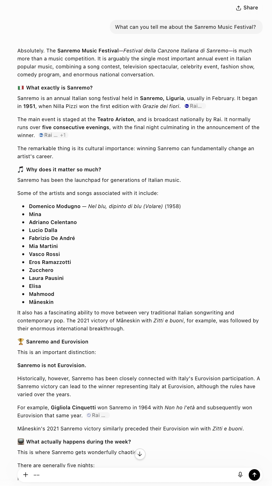
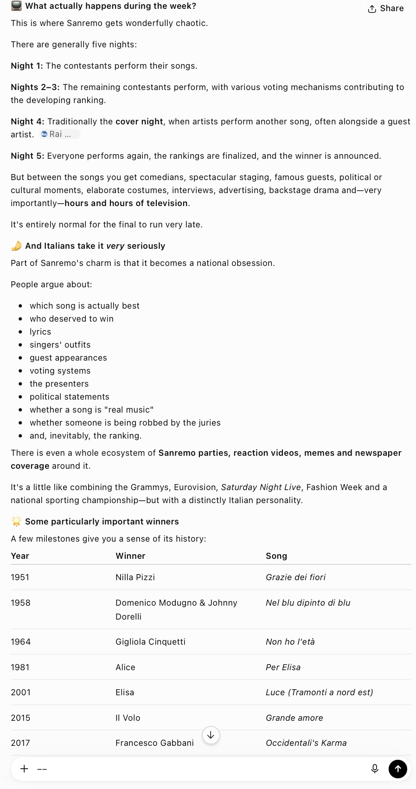
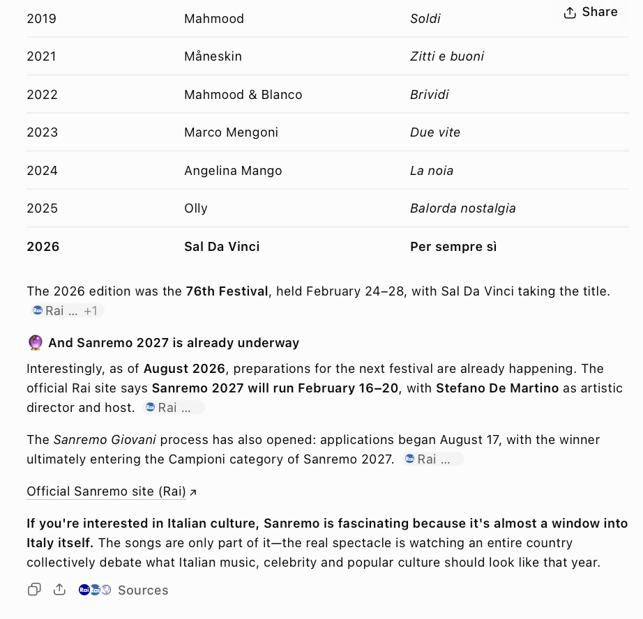
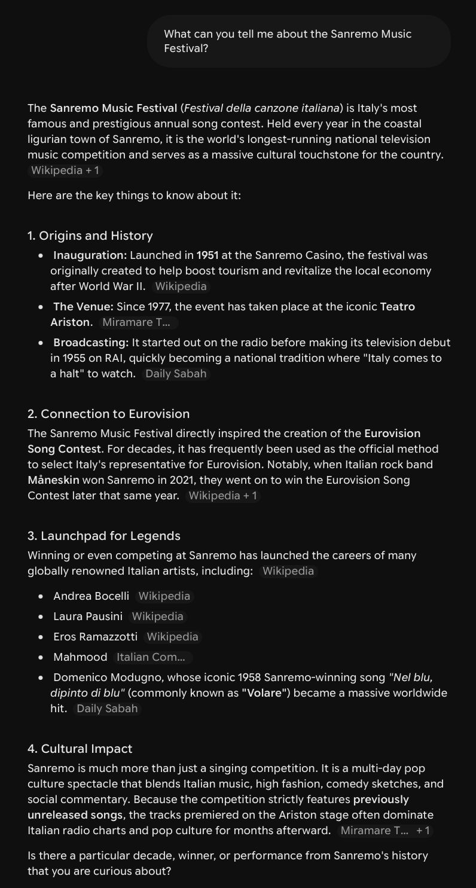
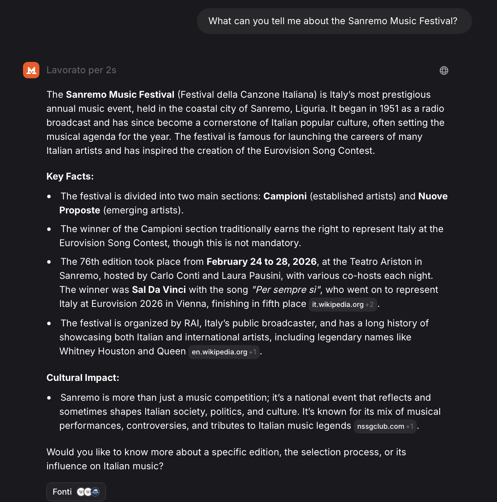
After carefully examining all the responses, we concluded that, considering our main aim to create RDF triples from the information provided, Gemini provided the most suitable results, despite ChatGPT's responses containing a greater amount of data.
Prompt: "Tell me about the 2026 edition of the Sanremo Music Festival. Guide me through the contestants, the names of the brand new songs they competed with and the host"
This prompting strategy allows us to obtain detailed information while restricting the results to specific categories explicitly defined in the textual prompt. It is a particularly useful resource when a task requires multi-step reasoning rather than simple information recall or straightforward generation, as the user inserts explicit intermediate reasoning steps within the input, which can help structure the process of reaching a solution.
For our project, this strategy proved very effective for building a database and creating RDF triples.
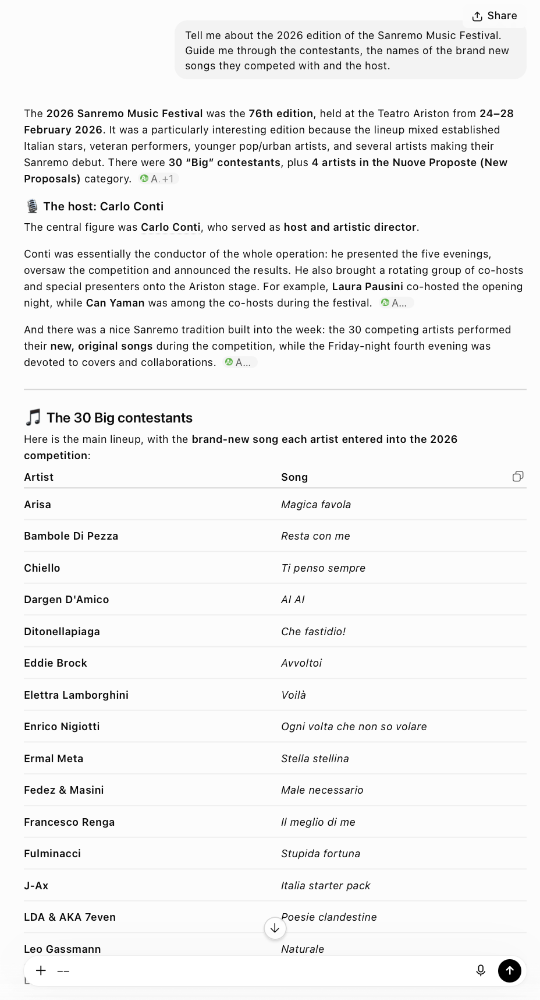
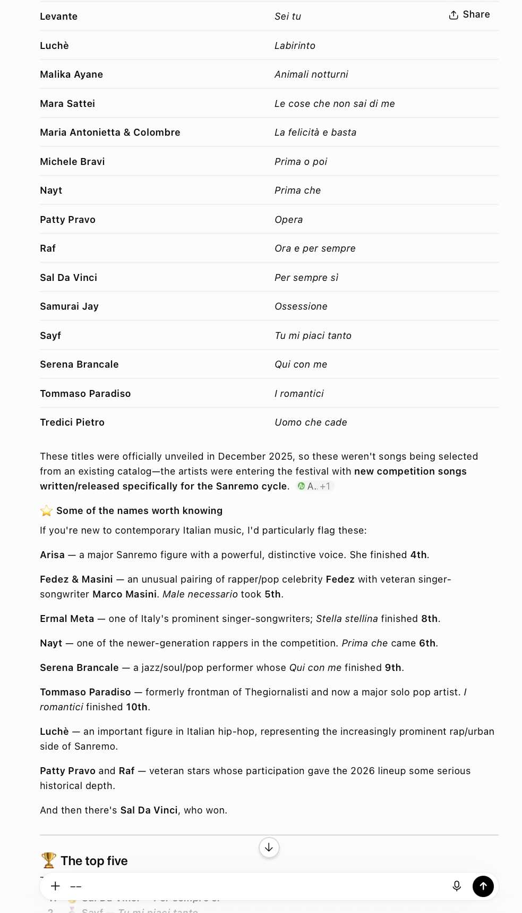
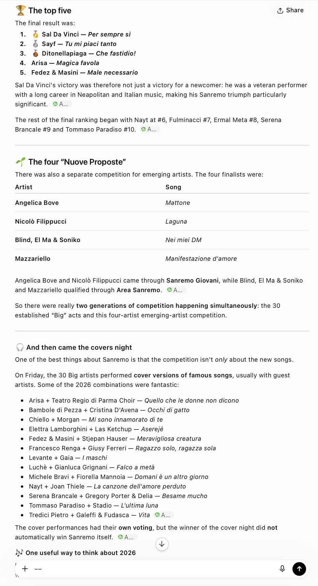
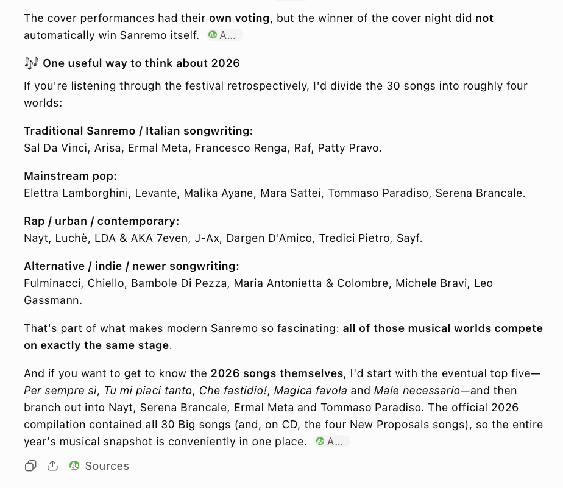
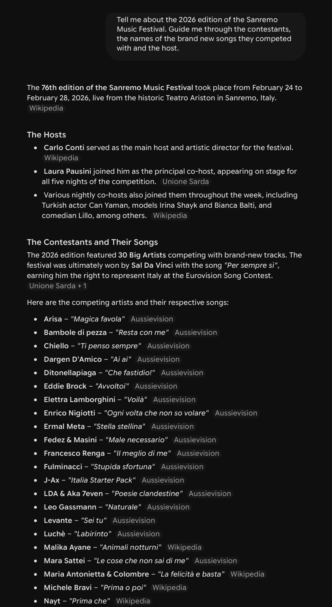
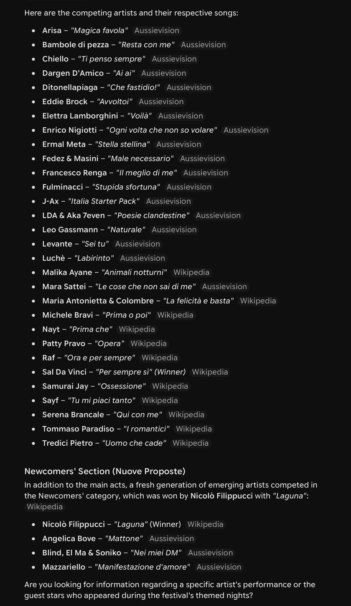
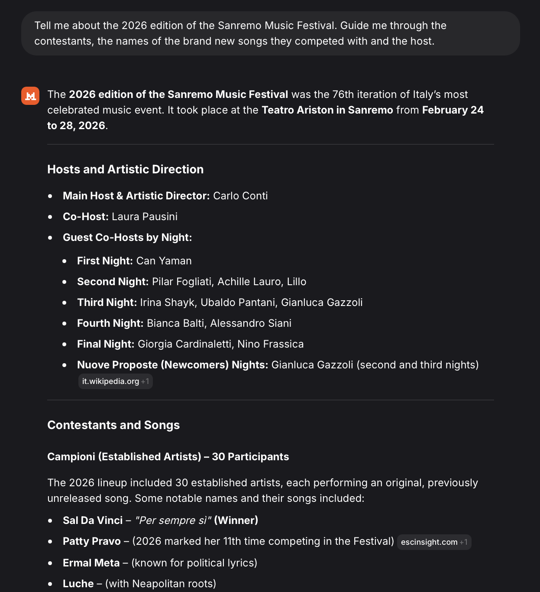

We analysed the 3 outputs generated by the different LLMs and agreed that Gemini provided the most suitable response, as it combined accuracy, completeness, and adherence to the prompt. Although ChatGPT provided more detailed information, it contained several inaccuracies, while Mistral's response was incomplete. Therefore, Gemini's output was considered the most reliable basis for creating RDF triples.
Prompt: "Every edition of the Sanremo Music Festival has a winner. The winner of the 2024 edition was Angelina Mango with the song 'La noia', the winner of the 2025 edition was Olly with 'Balorda Nostalgia'. Who won the 2026 edition and with which song?"
In this case, we prompted the LLMs by providing examples, following the few-shot prompting approach. This prompt engineering technique is particularly useful when you want an LLM to perform a task by giving it a small number of examples that demonstrate the desired input–output pattern. It generally offers more satisfactory results when zero-shot prompting performs poorly because a few carefully chosen examples can help the model understand the task better.
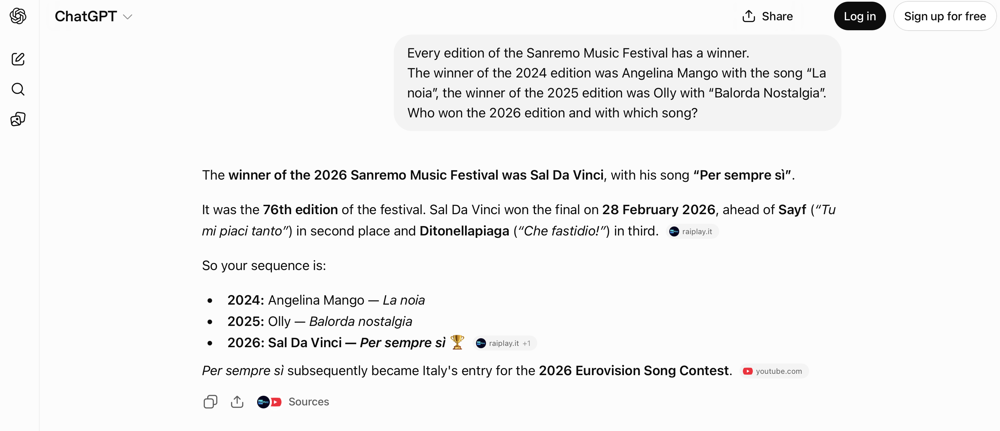
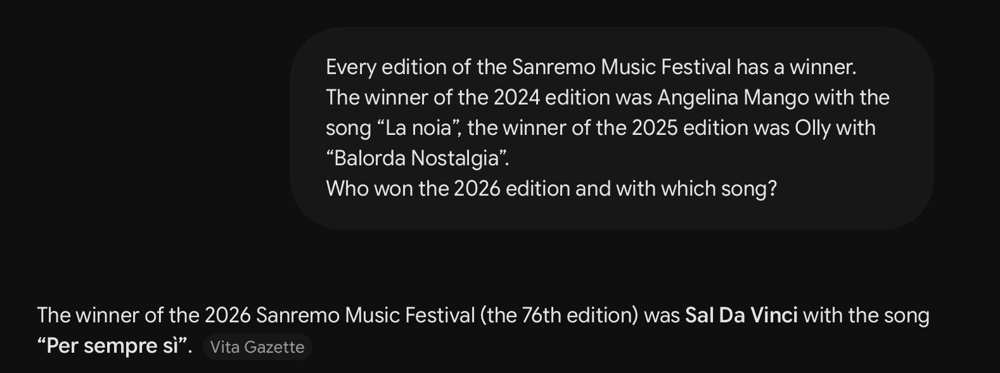

We considered ChatGPT to have provided the best result, as the structure of its output closely adhered to the format explicitly established in the prompt example.
After analysing and comparing the outputs generated by the three LLMs, we identified Gemini as the most effective overall. In spite of that, in 1 case out of 3 we preferred the results yielded by ChatGPT, which nevertheless generally tends to digress and return very long, unsolicited and occasionally erroneous results (or omits relevant details). Mistral produced the least satisfactory answers across our questions.